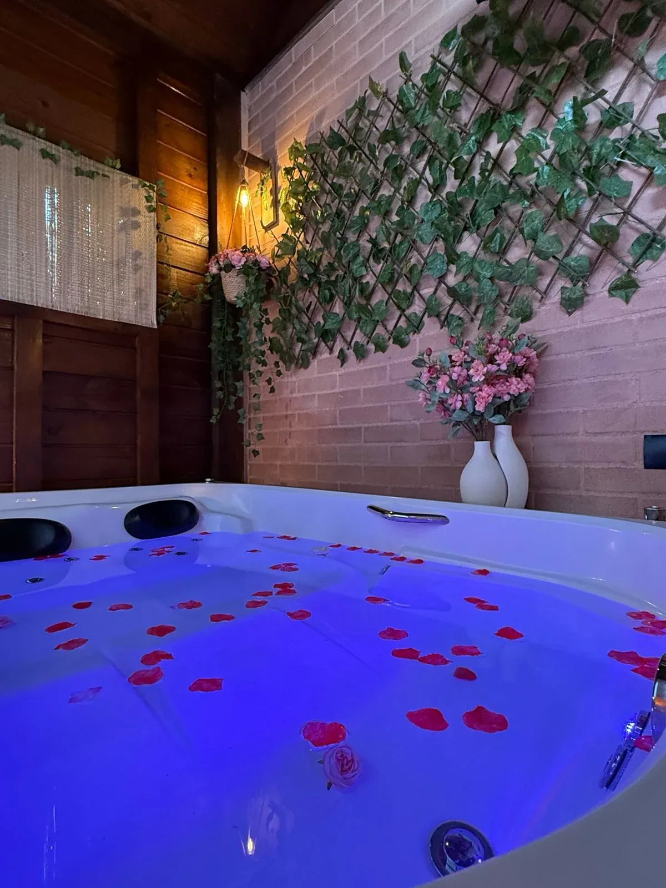
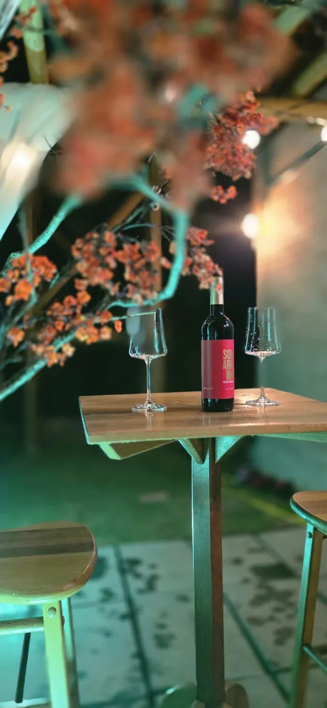
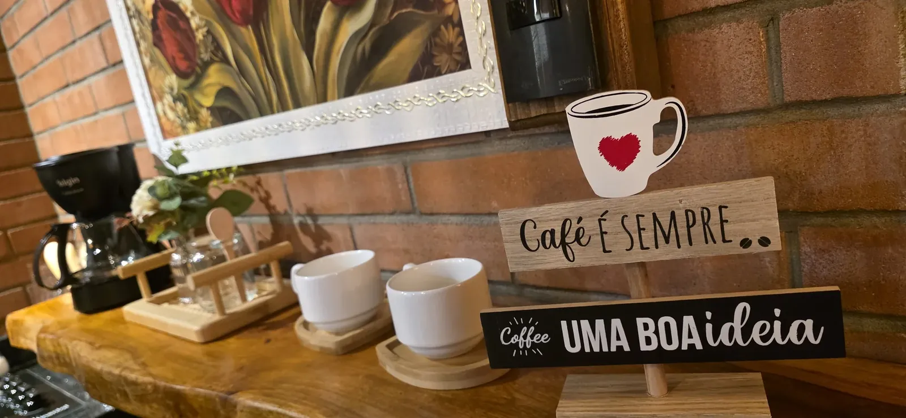
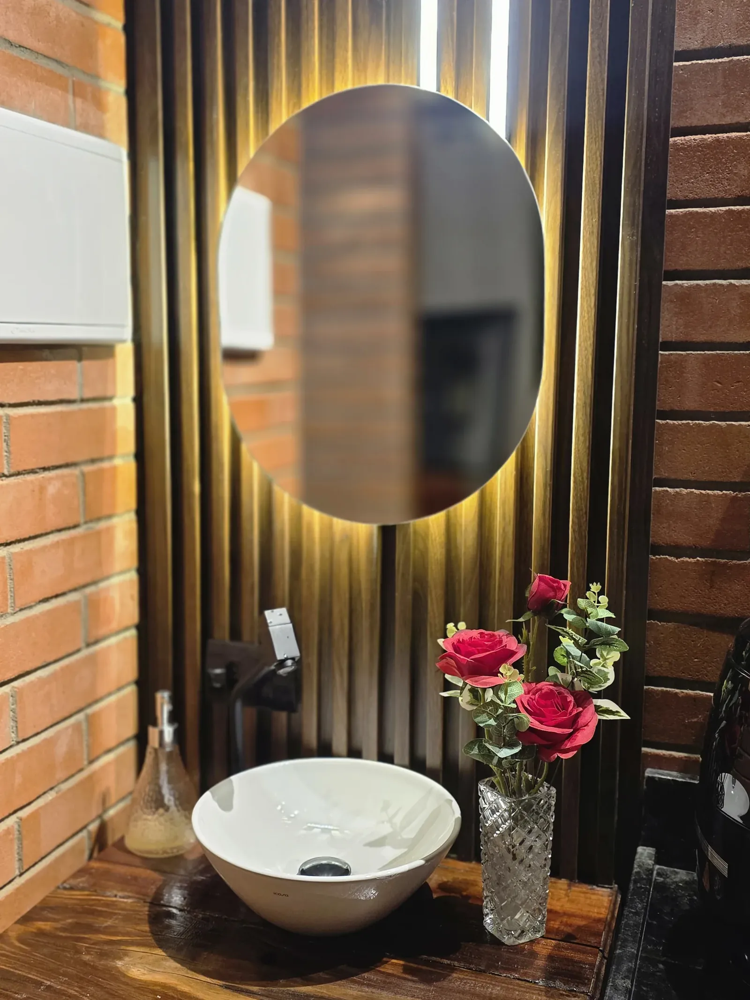
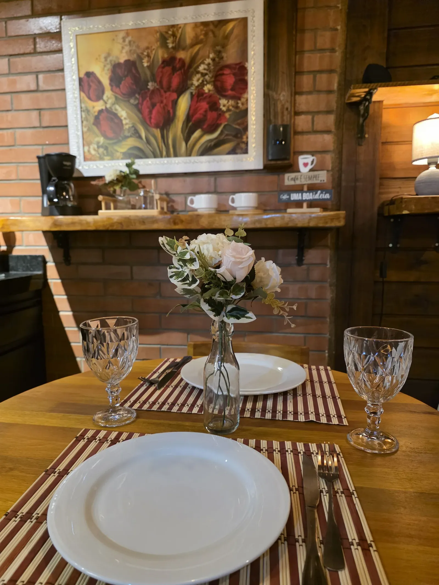
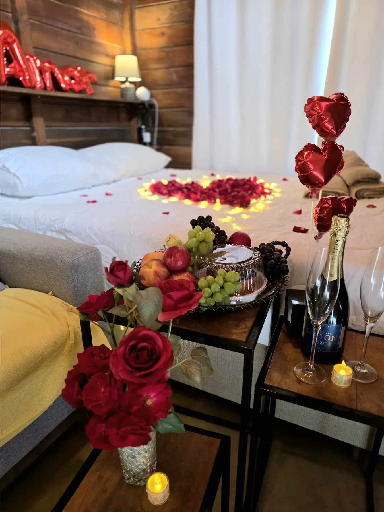
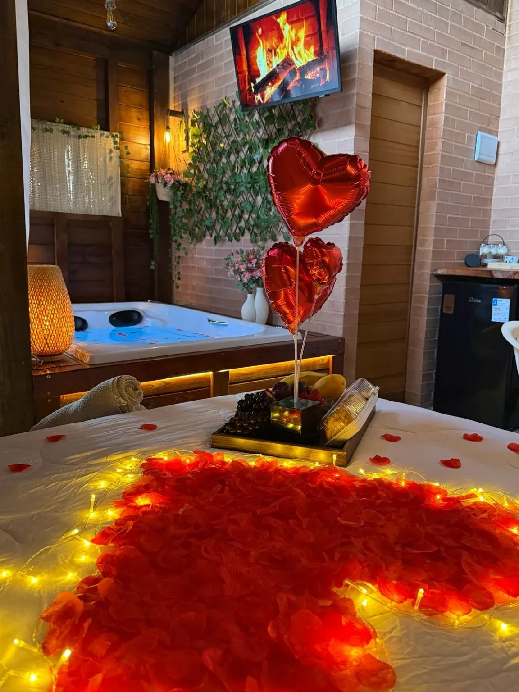
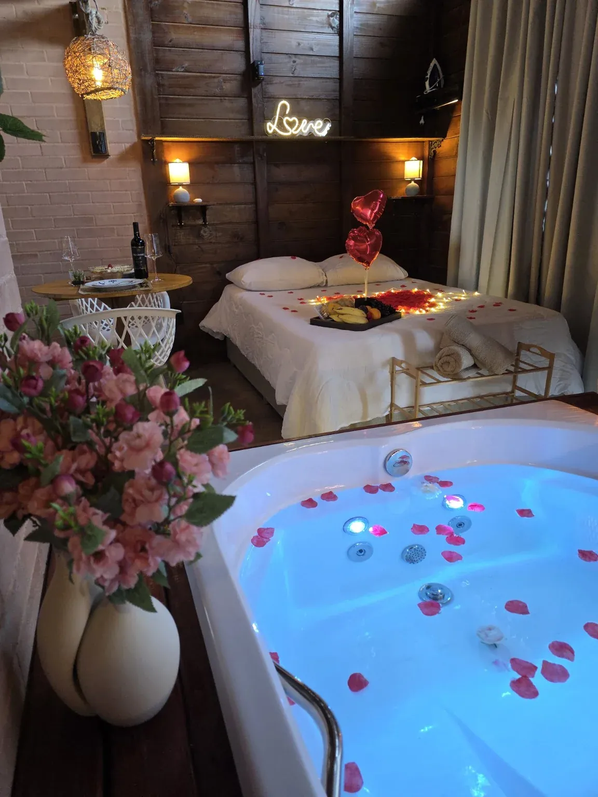

Hidromassagem + Pergolado privativo
Ville Amore
O Ville Amore é um chalé romântico para casal em Setiba Ville, Guarapari, com hidromassagem privativa, pergolado e área externa só de vocês. Madeira e luz quente criam uma atmosfera intimista.
Ver disponibilidade e preços →Chalé romântico com hidromassagem privativa em Guarapari
UM REFÚGIO INTIMISTADetalhes que convidam
a ficar mais um pouco.
O Amore combina o aconchego do chalé com uma área externa privativa. O pergolado cria o cenário para desacelerar; a hidromassagem completa a experiência quando a ideia é esquecer o relógio.

Luz baixa, água quente
e vocês dois.
A hidromassagem transforma uma noite comum em parte da viagem. Um vinho, pétalas, conversa e nenhum compromisso além de aproveitar o momento.

O lado de fora também é de vocês.
O pergolado e a área externa privativos ampliam a experiência: um espaço para café, vinho, descanso e tempo juntos em meio ao verde.
Conforto nos
pequenos detalhes.
O chalé reúne o que vocês precisam para aproveitar a estadia com autonomia e conforto, sem tirar o foco do que importa: o tempo juntos.
Conheça os espaços.
Ambientes pensados para acolher dois, com uma atmosfera simples, quente e intimista.



Um cenário pensado
para ficar a dois.
Da hidro aos detalhes de experiência, o Amore foi criado para transformar a estadia em parte da lembrança da viagem.



O essencial,
sem complicação.
EstadiaAté 2 hóspedes · 1 cama de casal
HoráriosCheck-in 15h · Check-out 11h
PetsPequeno porte são bem-vindos
LocalizaçãoSetiba Ville · Guarapari, ES
Praias e montanhas — conheça a região →
Praias7 min de Setiba e Santa Mônica
Natureza5 min do Parque Paulo César Vinha
Alguns dias para
lembrar por muito tempo.
Escolher as datas →Momentos para viver no Ville.
Ver a galeria do Ville Amore →Dúvidas sobre o Ville Amore
A hidromassagem e o pergolado são privativos?
Sim. A hidromassagem, o pergolado e a área externa do Amore são de uso exclusivo dos hóspedes desse chalé. O terreno é compartilhado com outro chalé, mas esses espaços de lazer não são compartilhados.
Qual a diferença entre Amore e Essenza?
Os dois recebem até duas pessoas e têm hidromassagem privativa. O Amore destaca o pergolado e a atmosfera intimista; o Essenza destaca o deck privativo. Nenhum dos dois tem piscina.
Onde fica o Ville Amore?
Em Setiba Ville, Guarapari, Espírito Santo, na Rua Gov. Valadares, S/N. São cerca de 7 minutos de carro até as praias de Setiba e Santa Mônica e 5 minutos até o Parque Paulo César Vinha. Os tempos variam conforme o trânsito.
Quantas pessoas podem se hospedar e quais são os horários?
O chalé recebe até 2 hóspedes e tem 1 cama de casal. O check-in é a partir das 15h e o check-out até as 11h. Nos fins de semana, a estadia mínima é de 2 noites; em outras datas e feriados, consulte as condições disponíveis.
Como consultar valores e reservar?
Escolha as datas na consulta de disponibilidade deste chalé. O site apresenta os valores para o período e você continua pelo WhatsApp para finalizar a reserva com o atendimento.
Regras da casa
- Não é permitido fumar nas áreas internas.
- Não são permitidas festas ou eventos.
Consultar regras completas e penalidades
Festas: multa de R$ 5.000 por dia. Fumo em áreas internas: multa de R$ 1.000, mais custos extraordinários comprovados de limpeza e higienização. As condições e o procedimento de apuração estão nas regras completas.
Ler Regras da PropriedadeQuando vocês
querem vir?
Consulte disponibilidade e valores em tempo real para o Ville Amore e continue pelo WhatsApp para finalizar com nosso atendimento.
Ver disponibilidade e preços →Precisa de ajuda? Fale pelo WhatsApp
Ver também no Airbnb ↗